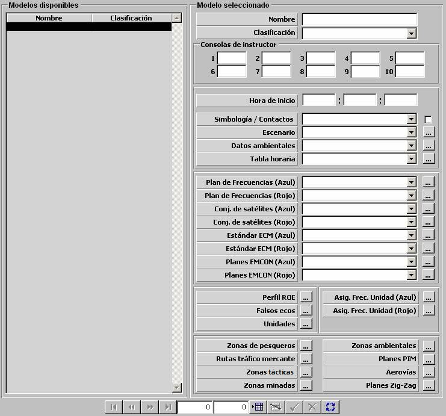

Herramienta de Preparación
En la Preparación de Modelos Básicos se introducen en la Base de Datos los parámetros que describen todos los aspectos relevantes de cada una de las unidades que pueden participar en un ejercicio. También se incluye en esta actividad la introducción de los datos relativos a modelos ambientales y a los escenarios donde se van a desarrollar los ejercicios, as como los formatos de los mensajes y bibliografía consultable por los alumnos. La estructura general de las tablas que constituyen esta base de datos se muestra en el siguiente esquema:
|
Preparación de BD de modelos de unidades y ambientales |
Dinámica |
Aceleración y giro Consumos combustible y batería Firmas Acústicas |
|
|
Plataformas |
Superficies Submarinos Aviones |
Helicópteros Bases Terrestres |
|
|
Sensores |
Infrarrojo Radares ESM IFF NVG |
Sonares Sonoboyas MAD Satélite |
|
|
Armas |
Seeker Misiles Torpedos Cargas |
Munición Cañones Bombas Conf. Armas aéreas |
|
|
Comunicaciones |
Link-11 Link-16 Data Link |
Mensajería Fonía Planes de Frecuencia |
|
|
Contramedidas |
Chaff Productor de Ruido Señuelos |
ECM COMSM |
|
|
Ambientales |
Condiciones Ambientales Batitermia Tabla Horaria |
||
|
Programación de Acciones |
Programación de Acciones Acciones |
||
|
ROE |
Condicionantes Autorizaciones Perfil ROE |
||
|
Preparación de BD de Escenarios |
Edición de Escenarios |
||
|
Preparación de BD de Mensajería |
|||
|
Preparación de BD de Bibliografía |
|||
Normalmente, la Preparación de Modelos Básicos representa una carga de trabajo alta hasta que se dispone de suficientes datos para la simulación de los equipos y unidades de interés. Una vez hecho esto, esta actividad se realizar esporádicamente y siempre de forma incremental, a medida que surja la necesidad de incluir nuevos equipos, nuevas unidades o modificar unidades existentes. Con el paso del tiempo se dispondrá de una valiosa Base de Datos que permitir preparar una infinidad de situaciones tácticas para su simulación.
La preparación de cada uno de los Modelos Básicos se realiza a través de un diálogo especializado para cada tipo, con el que se puede navegar por los registros ya disponibles en la Base de Datos, y que comprueba la validez de los nuevos datos introducidos:

La preparación de los Escenarios se realiza mediante un diálogo gráfico donde se presenta la cartografa digital.

Preparación de Ejercicios:
La Preparación de Ejercicios consiste básicamente en elegir de la base de datos las unidades que van a participar en el ejercicio, asignarlas a las distintas fuerzas y situarlas dentro de un escenario geográfico, con unas condiciones meteorológicas y ambientales determinadas. En esta fase tambin se configura la distribución de las consolas de alumno, asignando a cada una de ellas la unidad o unidades que pueden controlar.
Los ejercicios preparados se almacenan igualmente en la Base de Datos para su posterior ejecución.
